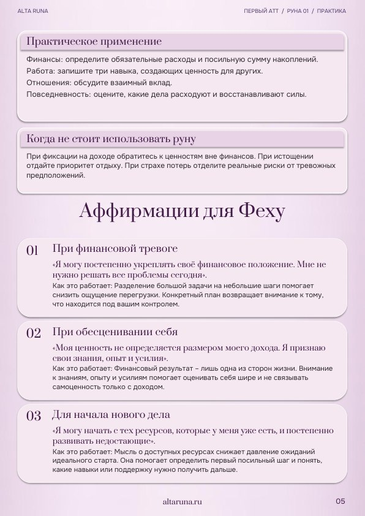
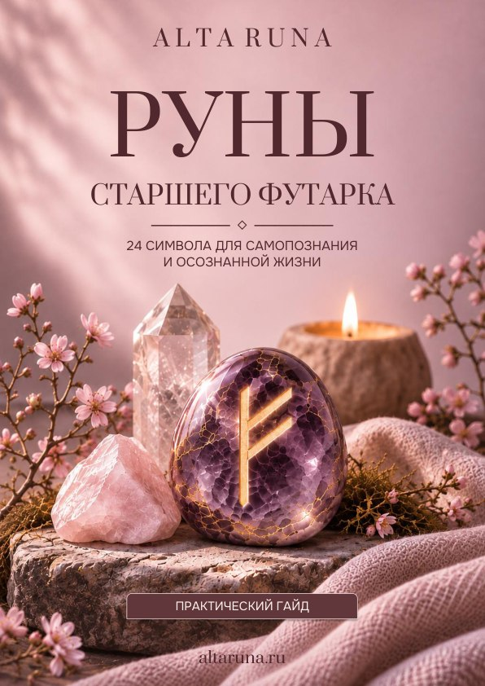

Бесплатный гайд ALTA RUNA
Руны Старшего Футарка
24 символа для самопознания и осознанной жизни
Познакомьтесь со значениями древних символов, их светлыми и теневыми сторонами и практическим применением.
PDF · 1,89 МБ · Без регистрации



24руны
54страницы
72аффирмации
Все 24 руны в гайде
Три атта Старшего Футарка.
Готовится к выпуску
Руны и натуральные камни
Расширенный гайд о сочетаниях рун и минералов – следующий шаг для тех, кто хочет глубже познакомиться с символами.
Начните знакомство с рунами
Сохраните гайд и возвращайтесь к нему в удобное время.
Скачать бесплатный PDF